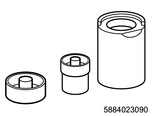
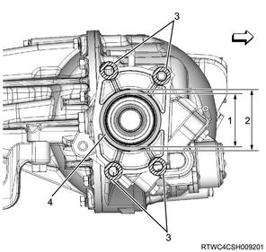

Drive shaft assembly reassembly (All models)
1. Axle mounting bracket reassembly
1. Install the bushing to the bracket using special tool.

SST: 5-8840-2309-0 - front axle mount bushing installer & remover
Note
- Use an installer and remover to press the bushing into the bracket to fasten it.
- Installer and remover
2. Drive shaft assembly reassembly
1. Assemble the drive shaft assembly.
Note
- Install the DOJ case to the bracket.
2. Install the oil seal to the drive shaft.
Note
- Install an oil seal and fix it with a snap ring.
- Use a new oil seal and snap ring.
3. Install the bearing to the drive shaft.
Note
- Install the axle shaft bearing to the drive shaft and fasten with the snap ring.
- Use a new snap ring.
4. Install the axle mounting bracket to the axle case.
Note
- Remove the sealing agent remaining on the aligning surfaces of the axle mounting bracket, axle case and housing, and then apply LOCTITE FMD-127 or equivalent.
- Remove the sealing agent adhering to the bolt and remaining in the screw hole. Then apply LOCTITE FMD-127 or equivalent to the threaded portion of the bolt and tighten the bracket bolt at the specified torque.
- The following illustration shows the right side. Apply LOCTITE FMD-127 to the left side as well as the right side.
Tightening torque： 88 N・m { 9.0 kgf・m / 65 lb・ft }

- Diameter 63.5 mm (2.50 in)
- Diameter 82 mm (3.23 in)
- Section where application of LOCTITE FMD-127 is inhibited
- LOCTITE FMD-127 application range
Note
- Apply grease to UJ.
Application quantity： 135 g { 4.76 oz }
Note
- Install the dust seal to UJ.
- Use a new dust seal.
- To make installation work smooth, thinly apply grease to the shaft and install bellows.
Caution
- When installing bellows, confirm that both ends of the bellows are fit in the case and shaft grooves.
- Bellows
- Shaft
- UJ case
- Shaft
5. Install the boot band to the boot using special tool.
Note
- Crimp bands on both sides of UJ bellows up to the standard value using a clamp pliers.

SST: 5-8840-2745-0 - clamp plier
Note
- Take care of the installation orientation. Check the standard crimping amount after installation.
- Use new boot bands.
- Standard crimping amount
- 1.2 - 4.0 mm {0.05 - 0.16 in}
- 1.2 - 4.0 mm {0.05 - 0.16 in}
Note
- Difference between 1 and 2
： 0.4 mm or less { 0.016 in or less }
Note
- Install bands to the other bellows.
- Use new boot bands.
6. Install the ball to the drive shaft.
Note
- Install it so that the smaller side of the ball guide faces the shaft side.
- Install the ball retainer.
- Use snap ring pliers to install a snap ring that fixes the ball retainer to the shaft.
- Use a new snap ring.

- Snap ring
Note
- Align 6 balls with the cage window and retainer groove to install them at specified positions.
- Ball
7. Fill the grease.
Note
- Fill specified amount of grease to the DOJ case and install the drive shaft assembly.
： 150 g { 5.3 oz } Filling amount
Note
- Move DOJ in a vertical direction several times after assembly to securely fit it.
8. Install the circlip to the case.
Note
- Install the circlip so that its open edge is located away from the ball groove of the case.
- Circlip
- Outer case
- Circlip
- Open edge
9. Install the boot band to the boot using special tool.
Note
- Crimp bands on both sides of UJ bellows up to the standard value using a clamp pliers.
SST: 5-8840-2745-0 - clamp plier
Note
- Take care of the installation orientation. Check the standard crimping amount after installation.
- Use new boot bands.
- Standard crimping amount
- 1.2 - 4.0 mm {0.05 - 0.16 in}
- 1.2 - 4.0 mm {0.05 - 0.16 in}
Note
- Difference between 1 and 2
： 0.4 mm or less { 0.016 in or less }